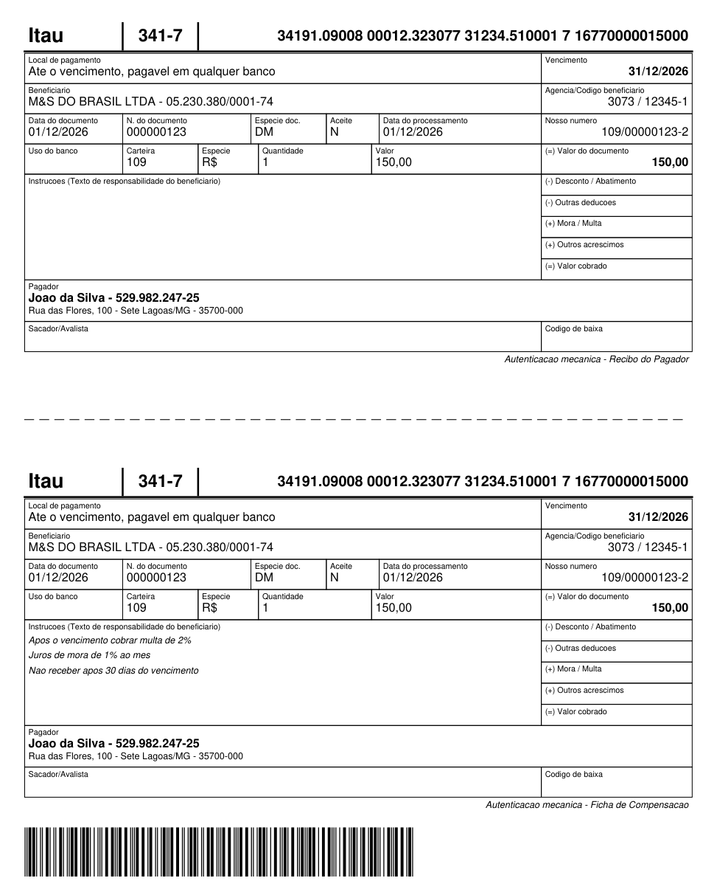
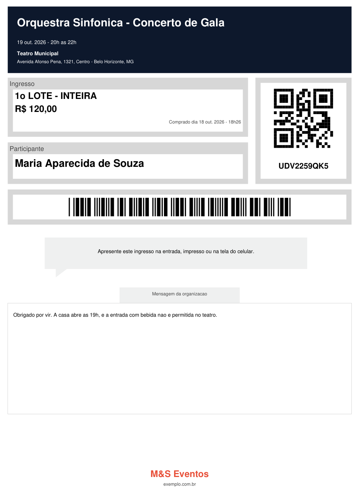

Gere, modifique, mescle e criptografe PDFs sem sair do banco — sem Java, sem middleware, sem dependências externas. Dois arquivos, um deploy.
DECLARE l_pdf BLOB; BEGIN -- cria o documento dentro do banco PL_FPDF.Init('P', 'mm', 'A4'); PL_FPDF.AddPage(); PL_FPDF.SetFont('Arial', 'B', 16); PL_FPDF.Cell(0, 10, 'Olá, Mundo!', '0', 1, 'C'); -- proteção com senha e permissões l_pdf := PL_FPDF.EncryptPDF( p_pdf => PL_FPDF.OutputBlob(), p_encryption => 'AES-256'); END;
Recursos
Da geração à proteção do documento — cada etapa executa como PL/SQL puro, pronto para triggers, jobs, APEX e APIs.
Sem servidor de aplicação, sem Java Stored Procedures — gere o PDF na própria trigger, job ou API PL/SQL.
Carregar, rotacionar, marcar d'água, mesclar e dividir arquivos PDF já prontos — inclusive PDF 1.5+, de qualquer produtor. Tudo por código.
Criptografia AES-256, AES-128 ou RC4, com senha de usuário/proprietário e controle de permissões: imprimir, copiar, editar.
Extensão opcional para gerar QR Code PIX (EMV) e Boleto Bancário no padrão FEBRABAN.
Sem OWA, sem OrdImage, sem libs de terceiros. Apenas dois arquivos: .pks + .pkb.
Código aberto, com CI automatizado, releases versionadas e histórico documentado.
Exemplos
A mesma API cobre a criação de documentos novos e a edição de arquivos existentes.
DECLARE l_pdf BLOB; BEGIN PL_FPDF.Init('P', 'mm', 'A4'); PL_FPDF.AddPage(); PL_FPDF.SetFont('Arial', 'B', 16); PL_FPDF.Cell(0, 10, 'Olá, Mundo!', '0', 1, 'C'); l_pdf := PL_FPDF.OutputBlob(); -- e agora é seu: grave, envie, devolva INSERT INTO documentos (pdf) VALUES (l_pdf); END;
DECLARE l_pdf BLOB; BEGIN SELECT pdf_blob INTO l_pdf FROM documentos WHERE id = 1; PL_FPDF.LoadPDF(l_pdf); PL_FPDF.RotatePage(1, 90); PL_FPDF.AddWatermark('CONFIDENCIAL', 0.3); l_pdf := PL_FPDF.OutputModifiedPDF(); END;
Página A4, três variantes de Helvetica em quatro corpos, 50 caixas posicionadas ao milímetro em duas vias, a coluna do dinheiro alinhada à direita e o código de barras ITF de 44 dígitos que um leitor de banco lê. Sem imagem nenhuma — logotipo, réguas e barras são desenho vetorial, como num boleto de verdade.

Saída real do examples/boleto.sql, gerada dentro do Oracle.
Os 44 dígitos do código de barras chegam prontos — o PL_FPDF desenha,
cálculo de cobrança é outro assunto.
-- rótulo miúdo em cima, valor embaixo PL_FPDF.Rect(px, py, pw, ph, 'D'); PL_FPDF.SetFont('Arial', '', 6); PL_FPDF.SetXY(px, py + 0.7); PL_FPDF.Cell(pw, 2.4, protulo, '0', 0, 'L'); PL_FPDF.SetFont('Arial', 'B', 9); PL_FPDF.SetXY(px, py + 3.2); PL_FPDF.Cell(pw, 3.4, pvalor, '0', 0, 'R');
-- 103 x 13 mm, como manda a FEBRABAN PL_FPDF.AddBarcode( 16.5, 233, 103, 13, '34197167700000150001' || '090000012323073123451000', 'ITF', FALSE); -- e o PDF sai daqui, do próprio banco l_pdf := PL_FPDF.OutputBlob();
O boleto prova grade. O ingresso prova o resto: cor — faixa preenchida com texto branco por cima, painéis cinzas —, QR Code e Code 39 na mesma página dizendo o mesmo código, uma página por ingresso e uma forma que não é retângulo, o rabinho do balão. Também sem imagem nenhuma.

Saída real do examples/ticket.sql, gerada dentro do Oracle.
-- painel colorido, e o título em branco PL_FPDF.SetFillColor(13, 25, 44); PL_FPDF.Rect(12, 13.5, 186, 36, 'F'); PL_FPDF.SetTextColor(255, 255, 255); PL_FPDF.SetFont('Arial', 'B', 17); PL_FPDF.SetXY(16, 18); PL_FPDF.Cell(178, 9, l_titulo, '0', 0, 'L');
-- o mesmo código em duas simbologias, -- para leitura na portaria PL_FPDF.AddQRCode( p_x => 156, p_y => 58, p_size => 32, p_data => l_codigo); PL_FPDF.AddBarcode( 45, 117, 120, 10, l_codigo, 'CODE39', FALSE);
Instalação
Compatível com Oracle 19c ou superior. Nenhum objeto além dos packages é criado.
Sem clone: o instalador completo em um .sql, com o SHA-256 ao lado.
pl_fpdf_install.sql
Sempre a última versão publicada.
Abra na SQL Window (F8) ou rode no SQL*Plus. Só SQL — nenhum comando de ferramenta.
@pl_fpdf_install.sql
Pronto para gerar o primeiro PDF.
SELECT PL_FPDF.co_version FROM DUAL;
-- 3.3.0
Para produção, fixe a versão.
O link acima serve sempre a mais nova — bom para experimentar, ruim para um
chamado de mudança. Cada versão tem URL própria e imutável na
página de releases, com o
SHA256.txt ao lado para conferir o que foi baixado:
curl -LO https://github.com/Maxwbh/pl_fpdf/releases/download/v3.3.0/pl_fpdf_install.sql
curl -LO https://github.com/Maxwbh/pl_fpdf/releases/download/v3.3.0/SHA256.txt
sha256sum -c <(echo "$(cat SHA256.txt) pl_fpdf_install.sql")
Estrelas aumentam a visibilidade do projeto para outros desenvolvedores Oracle — e são o melhor jeito de apoiar o trabalho.